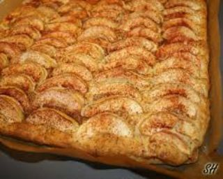

Finnish Apple Pie

Home
Description
Absolutely delicious, well balanced pie, with a cake-like crust.
Prep time: 30min
Ingredients
- 1 1/2 cups butter
- 2 cups sugar
- 4 eggs
- 2 cups milk
- 2 cups flour
- 2 tsp baking powder
Filling:
- Apples
- 1 1/2 cups sugar
- 1 tbsp cinnamon
Steps
-
soften butter. In a bowl mix on high speed egg and sugar until well
blended. Add softened butter, milk and flour and baking powder.
-
Pour into a greased cookie sheet. Top with sliced apples, and sprinkle
with cinnamon and sugar mix.
-
Bake at 400ºF for 10-15 minutes.